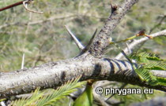

R.M.Bateman, Pridgeon & M.W.Chase, 1997")

| Phrygana: la Nature en Crète principalement, mais aussi d'ailleurs ... |
|  |
|
|
| Vachellia farnesiana | Neotinea lactea | Puccinia malvacearum |
| Espèces: 1317 --- Faune: 527 -- Flora: 765 -- Galles (Bacteria): 2 -- Champignons: 22 -- Lichens: 1 | |||||
| Nouveautés | |||||
| Fauna: | Agonopterix nodiflorella | Flora: | Melaleuca citrina | Flora: | Cuphea carthagenensis |
| Fauna: | Crotophaga ani | Flora: | Jasminocereus thouarsii | Fauna: | Microlophus bivittatus |
| Flora: | Holcus lanatus | Fauna: | Tibellus macellus | Flora: | Romulea ramiflora |
| 02 juin 2022 |